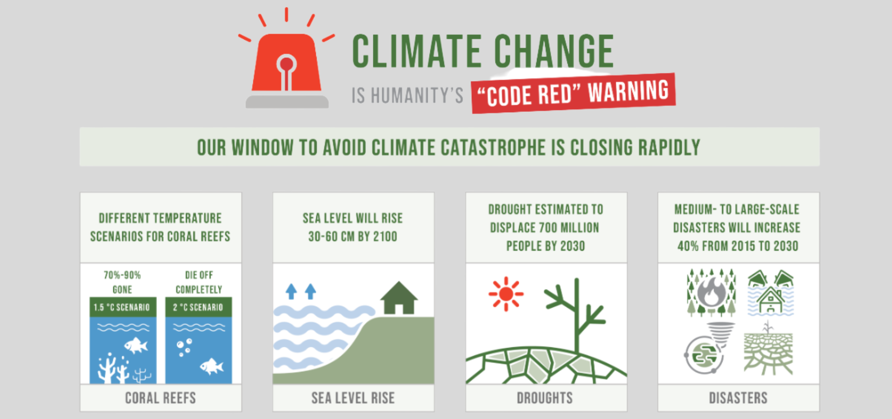

The global temperature has already risen 1.1ºC above the pre-industrial level, with glaciers
melting and the sea level rising. Impacts of climate change also includes flooding and drought,
displacing millions of people, sinking them into poverty and hunger, denying them access to
basic services, such as health and education, expanding inequalities, stifling economic growth
and even causing conflict. By 2030, an estimated 700 million people will be at risk of
displacement by drought alone.
Taking urgent action to combat climate change and its devastating impacts is therefore an
imperative to save lives and livelihood,and key to making the 2030 Agenda for Sustainable
Development and its 17 Goals,a reality.
In 2020, concentrations of global greenhouse gases reached new highs, and real-time data
point to continued increases. As these concentrations rise, so does the Earth's temperature.
In 2021, the global mean temperature was about 1.1°C above the pre-industrial level
(from 1850 to 1900). The years from 2015 to 2021 were the seven warmest on record.
To limit warming to 1.5° Celsius above pre-industrial levels, as set out in the Paris Agreement,
global greenhouse gas emissions will need to peak before 2025. Then they must decline by 43 percent
by 2030 and to net zero by 2050. Countries are articulating climate action plans to cut emissions
and adapt to climate impacts through nationally determined contributions. However, current national
commitments are not sufficient to meet the 1.5°C target.

How you can help
Sustainability improves the quality of our lives, protects our ecosystem and preserves natural
resources for future generations. In the corporate world, sustainability is associated with an
organization's holistic approach, taking into account everything, from manufacturing to logistics
to customer service. Going green and sustainable is not only beneficial for the company; it also
maximizes the benefits from an environmental focus in the long-term.
It's actually very easy to opt for sustainable products these days.Tons of companies make sustainability
a priority. From clothing, to beauty brands, to food and energy companies. There are so many sustainable
options to choose from. So choose brands that make sustainability a top priority. Choose brands that use
recycled plastic or materials rather than brands that continuously add to the landfills. If you are a
business owner yourself, careful planning across your business processes can help you stop sending waste
to landfills. Businesses can take a lot of simple steps to achieve more sustainable practices, such as
using bamboo instead of disposable plastic cutlery, replacing fluorescent tubes with LED bulbs, and
hiring waste treatment contractors, etc.